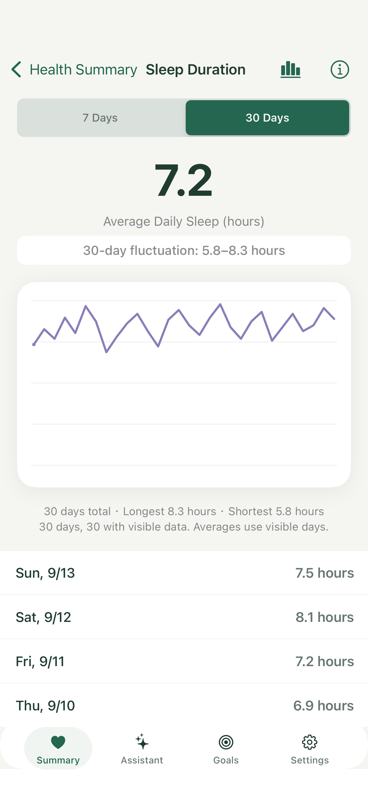
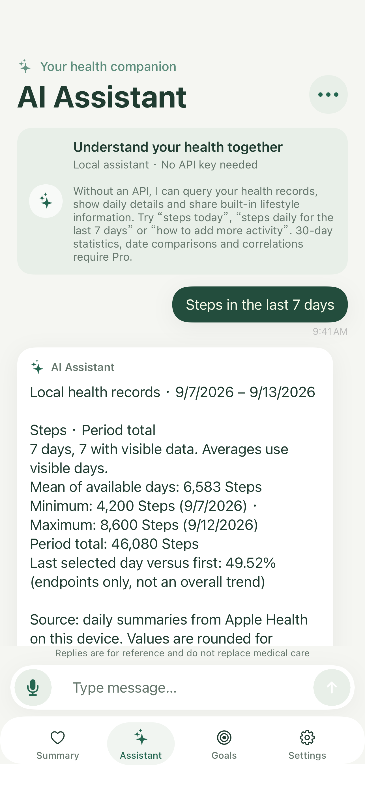

Start free
No API key and no subscription. Summary, 7-day trends, basic local questions, built-in information and one goal.
Download free. Buy Pro in the app when you want a longer window and more goals. Version 1.1.0 is live.
No API key and no subscription. Summary, 7-day trends, basic local questions, built-in information and one goal.
CNY 38 China launch list price, one time
Non-consumable IAP, product ID com.vitagauge.pro.lifetime. Apple shows the local price. The purchase does not include model credits.
| Feature | Free | One-time Pro |
|---|---|---|
| Health summary and 16 metrics | Included | Included |
| 7-day trends and basic local queries | Included | Included |
| Built-in lifestyle information and help | Included | Included |
| Health goals | 1 | Multiple |
| 30-day trends and statistics | No | Included |
| Date comparisons and correlations | No | Included |
| Online AI with your own API key | No | Included; provider fees separate |
No automatic renewal. Family Sharing is off. Restore with the original Apple Account. Free features stay available without buying.




Local: rules, built-in notes and deterministic math. No API call and no model download.
API: shows the provider text or an error. It does not fall back to a local answer.
Local + API: simple queries stay on-device; open-ended text uses the provider. Online parts still need Pro, your key and recipient consent.
The offline assistant supports recent 1 to 30 day windows and explicit dates. Longer windows, date comparisons and correlations need Pro. Correlation needs at least 7 finished paired days with variation in both series; it is not causation. Missing data is not zero. Body temperature is the body-temperature type, not sleep wrist temperature. The two blood-pressure readings are not joined across time into one measurement. Sleep is split by calendar day. AI replies do not replace care.
VitaGauge organizes health records for everyday self-management. It is not a medical device and does not provide diagnoses, prescriptions or emergency monitoring. Correlation does not establish causation. Consult a qualified health professional before making medical decisions.